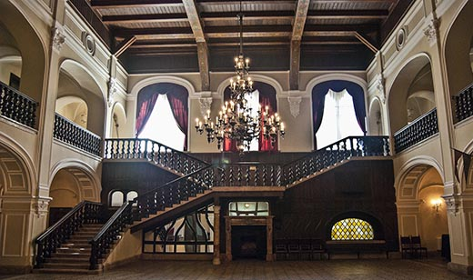

Castelul Karolyi
Prima rezidenţă cunoscută a familiei Károlyi la Carei datează de la sfârşitul secolului al XV-lea. Trebuie să fi fost o clădire solidă, dotată cu elemente de fortificaţie, dacă nobilii comitatului au considerat-o o ameninţare şi au cerut regelui demolarea ei. La sfârşitul veacului următor, din pricina accentuării pericolului turcesc, rezidenţa din piatră a fost transformată într-o cetate dotată cu şant şi zid de fortificare patrulater şi patru bastioane de colţ, prevăzute cu nişe de tragere pentru tunuri. Datorită poziţiei sale strategice şi a formei solide, în secolul al XVII-lea cetatea din Carei face parte din sistemul de fortificaţii împotriva turcilor. Pentru a face faţă cu succes unui eventual atac, fortificaţiile cetăţii sunt lărgite între 1661 și 1666, iar după refacere aici este repartizată o garnizoană germană, beneficiind de artilerie proprie. Ulterioarele atacuri turceşti nu au reuşit să distrugă cetatea, dar i-au provocat avarii grave, reparate prin lucrările din anul 1678.
După ce Alexandru Károlyi s-a alăturat răscoalei conduse de Francisc Rákóczi II, a fost rândul trupelor germane să atace cetatea celui care devenise inamic. Fortificaţiile rezistă şi de această dată, însă necesită noi lucrări de refacere, încheiate în anul 1708. În acelaşi an, Francisc Rákóczi II petrece aproape o lună în cetatea din Carei, vizita fiind păstrată ca un moment memorabil în istoria familiei Károlyi. Camera în care a locuit faimosul conducător a rămas, la cerinţa familiei proprietare, un punct de reper în cadrul ulterioarelor transformări ale castelului, nefiind atinsă până la începutul secolului XX.
În secolele XVII-XVIII, cetatea din Carei a constituit în mai multe rânduri locul de desfăşurare al unor întâlniri diplomatice importante. Printre altele, aici au avut loc negocierile pentru redactarea și semnarea tratatului Păcii de la Satu Mare, din 1711. În această perioadă şi până la 1848, cetatea şi mai târziu castelul Károlyi este apărat de o garnizoană formată din haiducii aşezaţi în oraş din satele învecinate. Garda permanentă are în compenţă 77 de călăreţi şi 30 de soldaţi pedeştri, marea lor majoritate români. În schimbul avantajelor economice primite de la moşier, aceştia trebuiau să se doteze cu uniforme şi armament corespunzător, să asigure paza, ordinea şi apărarea castelului şi a oraşului.
Odată cu aplanarea conflictelor militare din zonă, se nasc primele planuri de transformare a cetăţii din Carei într-o clădire cu funcţii în special rezidenţiale. Károlyi Antal este iniţiatorul acestor idei, însă lucrările efective de transformare debutează abia în anul 1792. Elementele principale de fortificaţie, bastioanele, sunt demolate, iar cetatea este transformată într-un castel în stil baroc, realizat după planurile lui Jozef Bitthauser. După o descriere a vremii, castelul acoperit cu şindrilă urma un plan patrulater, cu două etaje, iar intrarea principală era situată pe partea de nord. Etajul superior beneficia de 21 de camere, iar cel inferior, de 20 de încăperi prevăzute cu boltă. Capela castelului era anexată laturii sud-estice, iar bucătăria şi anexele erau construite în continuarea laturii sudice a clădirii principale.
Unele dintre cele mai importante momente din istoria castelului baroc le constituie vizitele membrilor familiei imperiale. Astfel, în anul 1797, Iosif Károlyi primeşte la rezidenţa sa vizita prinţului Jozef de Habsburg, iar aproape un secol mai târziu, în 1884, prinţul Rudolf de Habsburg petrece două zile la Carei în compania soţiei sale.
O nouă transformare a castelului, cea care conferă clădirii aspectul actual, are loc între anii 1894-1896 şi este iniţiată de Ştefan Károlyi. Urmând planurile arhitectului Arthur Meinig, castelul baroc este transformat într-un edificiu în stil eclectic, cu elemente istorizante, având aspectul unui castel cavaleresc medieval. Structura de zid a castelului baroc este păstrată aproape în totalitate, fiind însă adăugate mai multe turnuri de diferite forme şi dimensiuni, care conferă clădirii un aspect asimetric. Accentuarea impresiei de medieval este realizată cu ajutorul şanţului cu apă construit de jur-împrejurul castelului. Intrarea principală a fost transferată pe latura de vest a castelului, spre oraş. Curtea interioară a castelului baroc a fost acoperită cu un tavan de grinzi masive, pictate şi transformată astfel într-un uriaş hol de primire. Pe trei dintre faţadele castelui sunt combinate elemente arhitecturale şi de decor aparţinând mai multor stiluri - romantic, baroc - iar faţada estică este dominată de stilul neogotic.
Interiorul castelului era dominat de holul de primire, pavat cu mozaic şi dotat cu şeminee uriaşe. Încăperea situată la intrarea secundară, dinspre sud, a castelului funcţiona ca sală de mese şi tot de aici era accesibilă capela familiei, situată tot la pater. Restul încăperilor de la acest nivel erau ocupate de slujitori sau constituiau spaţii de depozitare. La etajul I, aripa sudică era rezervată apartamentelor familiei Károlyi, iar majoritatea restului încăperilor funcţionau ca apartamente destinate oaspeţilor.
După moartea lui Ştefan Károlyi, în anul 1907, membrii familiei nu mai locuiesc la Carei. În haosul creat de evenimentele sfârşitului de an 1918, multe dintre elementele de mobilier şi obiectele de valoare din interiorul castelului au dispărut. Perioada interbelică, ca urmare a unui acord dintre statul roman şi cel maghiar, obiectele de valoare rămase în castel (în special tablourile) au fost înapoiate familiei Károlyi. Un moment memorabil rămâne, în viaţa castelului şi a Careiului din perioada contemporană, vizita regelui Ferdinand I al României şi a reginei Maria, în anul 1919.
În perioada interbelică o parte a castelului este transformată în sanatoriu, iar restul găzduieşte un cazino. În timpul celui de al doilea război mondial, cu acordul familiei Károlyi, funcţionează aici o şcoală militară, transformată în spital militar în anul 1944. În perioada comunistă, castelul găzduieşte instituţii culturale de interes public: muzeul, casa de cultură şi biblioteca orăşenească. Astăzi, castelul găzduieşte o expoziție muzeală de interioare istorice care redau ambianța de odinioară a castelului și o expoziție de istorie locală.